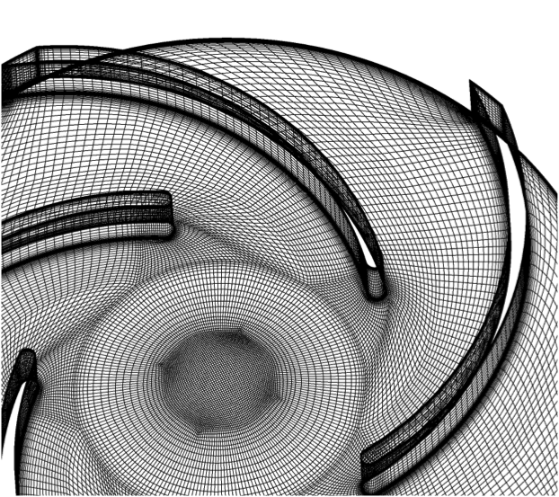
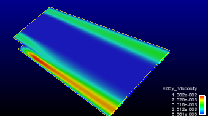

IEEE Visualization Contest 2011
Official event of the VisWeek 2011
Data
The data description is also available as
pdf
(last update 15.06.2011). The donwload links can be found at the
bottom of this page.
We require that any publications (not the contest entries) using any
of these datasets include the following acknowledgment:
The data is courtesy of the Institute of Applied Mechanics,
Clausthal University, Germany (Dipl. Wirtsch.-Ing. Andreas Lucius).
We provide 3 data sets of the same centrifugal pump, each obtained with a
different turbulence model.
In principle, there are three general approaches: LES, RANS, and the
hybrid LES/RANS. Each approach represents a class of models; so for
each approach, there are many more or less different models.

The centrifugal pump uses a spinning "impeller"
which has backward-swept blades.
The RANS model
The state of the art turbulence
modelling is derived from averaging the Navier Stokes equation in
time (Reynolds Averaged Navier Stokes, or RANS). During this
averaging process the Reynolds stresses appear as additional unknown
variables. Most models are based on the eddy viscosity concept,
where the influence of turbulence fluctuations is modelled by the
introduction of an additional eddy viscosity. These models are based
on some crude assumptions and especially fail in strongly separated
flows.
The LES model
Another approach for the computation of turbulent flow is the direct
simulation of turbulence down to the grid size and modelling only
turbulence at smaller scales. The LES (Large Eddy Simulation)
approach requires very fine grids and time steps to resolve the
important turbulent structures, which makes it unfeasible for high
Reynolds number flows in complex industrial geometries.
The hybrid LES / RANS model
A mixed approach is hybrid LES / RANS modelling: a standard
turbulence model is used for attached regions and switches to LES in
strongly separated regions. This reduces the computational effort in
comparison to pure LES and improves accuracy in comparison to pure
RANS simulations.
Nevertheless, massive parallelization is required to solve the 3D
transient simulation modell.
Data description
Each data set comprises one full rotation of the centrifugal pump
consisting of 80 time steps.
The numerical setup comprises 6.7 mio nodes and 6.4 mio
cells,
respectively. The setup contains 2 stationary domains (inlet and diffuser)
and the moving rotor domain.
Because the hybrid models are the state-of-the-art today, two of the
models we have chosen are from this class, namely DES
and SAS.
DES was derived from the LES approach, while SAS is based on the
URANS (= Unsteady RANS) approach.
The third model we have chosen, SST, is a model of
the RANS class, which are the classical turbulence models, some of
which exist for tens of years. We have chosen SST because it is one
of the best in its class.
LES is (at least, currently) not feasible for complex geometries and
high Reynolds numbers, because of the sheer amount of nodes
necessary.
See our
reference section for
further information.
The visualization should look quite different when
applied to the SST data set versus the other two hybrid models (DES
and SAS): in the DES/SAS data sets, turbulent structures are
resolved in massively separated regions. For this reason one should
see much more detailed structures in comparison to the SST data set.
SST does not resolve turbulent fluctuations; only time-dependent
average values can be computed. For the other two models turbulences
can be directly resolved using a sufficiently dense grid.
Explaining the variables:
For each node, a
couple of variables are available:
- total pressure
- total pressure in stn frame
- turbulence kinetic energy
- velocity
- velocity in stn frame
Pressure:
static pressure
Total pressure:
static pressure plus kinetic energy of the relative velocity in
pressure units
Total pressure in stn frame (=Total pressure in 4):
static pressure plus kinetic energy of the absolute velocity
Turbulence kinetic energy (=Turbulence kinetic 5):
kinetic energy of the turbulent fluctuations of the velocity. Using
SST, the whole turbulence is modeled (k-Omega model, k is the
turbulent kinetic energy). With SAS or DES the modeled kinetic
energy is clearly smaller as the turbulent fluctuations in the flow
field are resolved.
Velocity:
velocity in the relative system (rotating with the impeller)
Velocity in stn frame (=Velocity in Stn Fr 7):
velocity in absolute system (observed from fixed generator casing).
As there are two different velocities, there are also two different
formulations of the total pressure.
A word about the terms "absolute
velocity" (= "velocity in stn frame") and "relative velocity" (new
15.06.2011)
First of all, all vectors and points are defined in a global
Cartesian coordinate system, which is the same for all different
kinds of velocity.
The fluid at a point p in space has some absolute velocity
c.
If this point p is a point on the surface of the rotor, it
moves on a circle around the axis of the rotor; this point p,
then, has some other velocity u (which is exactly
tangential to the circle). Thus, we can define the 'relative
velocity' w of the fluid at p, which is w
= c - u.
In other words, an observer sitting at p and moving along
with p (but always looking in the same direction in the
global coordinate system!) would observe the fluid in point p
moving with a velocity w, while an observer sitting still
relative to the global coordinate system would observe that same
fluid in point p having velocity c.
The velocity of point p can be derived from the rotational
velocity omega of the rotor by u = omega x r,
where r is the vector from the rotor's axis to p
(and perpendicular to the axis).
These notions can, of course, be extended to any point in the domain
of the rotor. In addition, it is understood that all vectors and
positions are functions of time.
PS: why would one want to express the same velocity in two
different ways?
Because some differential equations are easier when expressed
over the relative velocity, while others are easier when expressed
over absolute velocity.
A word about the grids:
Even though the rotor physically moves in time with
constant rotational speed, the flow inside the rotor is calculated
with a stationary grid. The relative movement of rotor and stator
domains is captured with the usage of transient rotor stator
interfaces. The interface properly connects the nodes on both sides
at rotated position.
For that reason the geometry is static for all files. (If the
original data is post processed with CFX, the rotation of the grid
is automatically done.) For any other tool the rotation needs to be
done by the user. Despite the fact that rotation of the impeller is
physical, analysis may be more appropriate for a stationary rotor
depending on the task. Tracking the movement of vortical structures
is easier without superposition of the rotation of the rotor.
For your information: the rotor domain contains all volume elements
named with "ROTOR_VOL". It rotates with a velocity of -600
revolutions per minute around the Z axis (using the right-hand
rule). The time step between two transient files is 1.25E-3 seconds,
which corresponds to 4.5 degrees.
A bit more about the names of the elements:
The following surface elements are also part of the rotor volume:
-
"Bodenscheibe",
- "Deckscheibe",
- "Deckscheibe Spalt",
- "LR Diffusor",
- "Schaufel",
- "Spalt Gehaeuse"
The following surface elements are the interfaces:
-
"Eintritt Rotor 1 Side 2"
- "Eintritt Rotor 2 Side 2"
- "Rotor
Diffusor Side 1"
- "Spalt SS Side 1"
File Formats
The data can be downloaded in two different formats,
Ansys 12.0 CFX and EnSight.
The Ansys CFX files might be useful for people already
having an Ansys license.
The EnSight files can be imported by many applications and libraries
(e.g., VTK,
ParaView,
VisIt) and might
also be useful for people who have already a
EnSight license, or participants can use EnSight CFD Free edition,
www.ensightcfd.com. EnSight
standard trial licenses will be provided upon request (write an
email to Eric O'Connell). EnSight CFD
Free version does not require a license and can be simply downloaded
and used without a license key.
The EnSight files are ASCII files, so they can be loaded
by home-grown visualization software. The files are in the EnSight
Case Gold format, which is described in Chapter 12 of the EnSight
User Manual, which can be downloaded here:
http://www.ensight.com/Download-document/180-User-Manual.html
If you would like to get a copy of the data in another format,
please contact us, and we will see whether we can do something for
you.
Test data
If you would like to develop your own loader for the
EnSight files, you might want to test your loader with
the following toy example.
EnSight Gold file format:
download

Visualization of the test data. In this case,
the scalar "Eddy_Viscosity" is used.
{kind=link}
Contest data
All 3 data sets in both formats (CFX / EnSight) can be downloaded from following two locations
Note the LARGE file size and ensure sufficient disk space
when extracting. The extracted files will need about 500GB.
Acknowledgements
The data is courtesy of the
Institute of Applied Mechanics, Clausthal University, Germany (Dipl.
Wirtsch.-Ing. Andreas Lucius).
Web and data hosting
for VisContest is provided by courtesy of SDSC, TeraGrid and
Clausthal University.
Early Registration
Notification
September, 9th, 2011
Deadline
July, 31st, 2011,
23:59 PST
Contact
|
|
|
|
|
|
Web and data hosting is provided by courtesy of SDSC, TeraGrid
and Clausthal University. (c) 2010/2011 - IEEE Vis Contest 2011, Jan Klein, Gabriel Zachmann Last update March, 27th, 2012 |
|
||